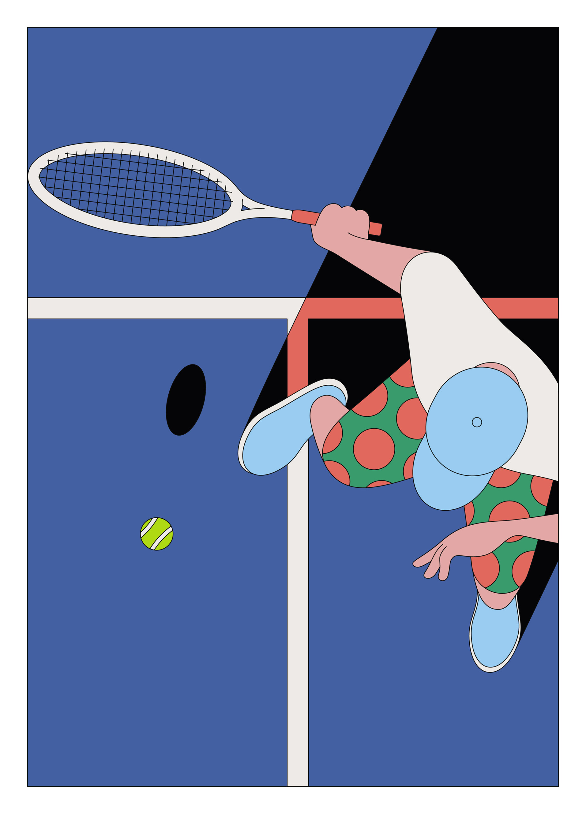

Camilo Huinca
Graphic designer, illustrator
Born and raised in Santiago in Chile, Camilo has divided his career between graphic design and painting.

Portfolio
Huinca's work is rich with colour, content and a brightly illustrated narrative.




Identifying people's behaviour
Camilo is fascinated by everyday scenes, moments and personal habits, and depicts them in his own psychedelically shaped style.